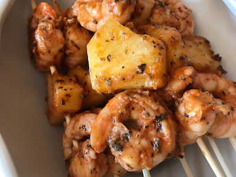

Marinated Grilled Shrimp

Descriptions
Learn how to marinate shrimp for grilling with this easy marinade
that makes your shrimp so yummy you don't even need cocktail sauce.
Don't let the cayenne pepper scare you — you don't even taste it.
My young kids love it. It is also a big hit with company and easy to prepare.
I make this with frozen or fresh shrimp and use my indoor electric grill
if the weather is not good for outdoor grilling.
Try it with a salad, baked potato, and garlic bread.
Ingredients
- ⅓ cup olive oil
- ¼ cup tomato sauce
- 3 cloves garlic, minced
- 2 tablespoons red wine vinegar
- 2 tablespoons chopped fresh basil
- ½ teaspoon saltl
- ¼ teaspoon cayenne pepper
- 2 pounds fresh shrimp, peeled and deveined
- 6 each skewers
Directions
-
Stir together olive oil, tomato sauce, garlic,
and red wine vinegar in a large bowl. Season with basil, salt, and cayenne pepper.
Add shrimp to the bowl; stir until evenly coated.
Cover and refrigerate for 30 minutes to 1 hour, stirring once or twice.
- Preheat the grill to medium heat. Lightly oil the grate.
-
Thread shrimp onto skewers, piercing once near the tail and once near the head.
Discard marinade.
- Cook shrimp on the preheated grill until opaque, 2 to 3 minutes per side.